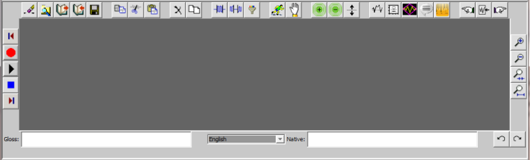

General Operating Instructions
The ACORNS Sound Editor has three sections that display when it executes. At the top of the
display is a control panel that contains two sliders and check boxes, and two buttons. A picture
of this panel follows.
The slider and checkbox on the left control the computer speaker output. The slider and
checkbox on the right control microphone input. Drag the sliders to adjust the volume
of the input and/or output. Dragging to the left decreases the volume; dragging to the right
increases the volume. The mute check box, if checked, indicates that the output to the speaker
is disabled (muted). Check this box to reenable the output. The boost check box indicates
whether recordings will amplify (boost) the microphone input signal. It is a good idea for the
boost to be active when working with sound
recordings. Note that these controls are not present on MAC systems.
There are three buttons on the ACORNS control pannel, one to the left and two to the right.
Clicking a button triggers the program to perform the desired function. The button on the
left triggers the ACORNS help option.The page you are reading is part of the help facilities
offered. Click on  to learn more
about the help option.
to learn more
about the help option.
The first button on the right ( ) toggles the mode
of operation between sound editing and
annotation. Sound editing is that standard way we manipulate and edit sound recordings. In editing
mode the program displays
two identical sound panels. Refer to the sound panel web page for
more information about how to work a sound panel. Annotation mode allows you to attach text
annotations to portions of a sound recording. Refer to the annotation
panel web page for instructions regarding this mode.
) toggles the mode
of operation between sound editing and
annotation. Sound editing is that standard way we manipulate and edit sound recordings. In editing
mode the program displays
two identical sound panels. Refer to the sound panel web page for
more information about how to work a sound panel. Annotation mode allows you to attach text
annotations to portions of a sound recording. Refer to the annotation
panel web page for instructions regarding this mode.
The button on the far right triggers an option dialog that enables you to configure the advanced
controls that are available. This option makes sense if you are familiar with digital signal
processing. Otherwise you can leave the options set as is. Click on
to learn more
about the advanced control features.
As we just mentioned, in editing mode, there are identical sound panels that show on the bottom
part of the application frame. These panels allow you to enter and edit sound recordings. You can
use one of these as a work area as you use the various cut, paste, and edit options. The picture of
one of these panels follow. Click on the Acorns Sound Panel page for
more information on how use these panels.
